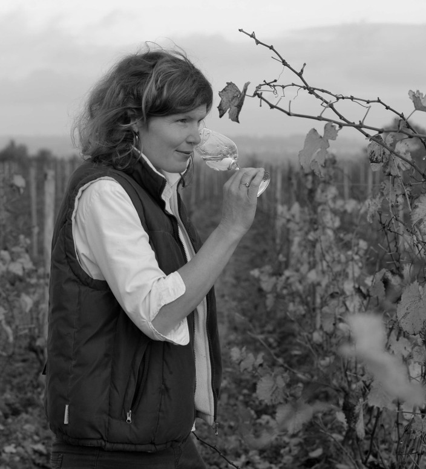

Domäne Vincendeau - Domaine Vincendeau - Vins de Loire - Vins fins de Loire - Crémant de Loire - Vins d'Anjou - Vins fins - Vins de Qualités - Vins biologiques - Jus de raisin bio
From Rochefort with Love ..
A l’origine un investissement dans l’achat de plus de sept hectares de terre situé sur la Corniche Angevine (site classé), un coin de paradis sur les hauteurs de Rochefort sur Loire. La moitié était plantée en Chenin blanc, notre cépage autochtone. Depuis est arrivée une parcelle de Grolleau Noir. Dès le premier jour, je cultive mes vignes et j’élabore mes vins selon les règles de l’Agriculture Biologique (certifiée Ecocert). J’ai été élevé ainsi, une évidence ! Le terroir est d’un caractère redoutable, très caillouteux=minéral : Schiste vert & pourpre, Spilite, Phtannite, Quartz...Les rendements sont faibles, maximum 35 hectolitres par hectare ou moins, selon l’âge de la vigne.
J’ai entrepris un programme de plantations de vignes pour rajeunir le vignoble, tout en conservant les plus belles vieilles parcelles.
Mon apprentissage et mes premières expériences en viticulture, œnologie et commerce me permettent de gérer moi-même, de manière attentionnée, minutieuse & exigeante le travail aussi bien dans les vignes, la cave et les autres « services ». Après tout, il s’agit d’une véritable (jeune) entreprise ! Quelques fidèles saisonniers embauchés en local complètent l’équipe du Domäne lors des hautes saisons (vendanges, taille, ébourgeonnages, conditionnement), ainsi que l’aide précieuse par ma famille.
100 % de mes jolis raisins sont récoltés à la main.
Un travail d’artisan. Un défi.
Curieux ? Continuez votre lecture...Ecrivez-moi. Dégustez mes Crémants & Vins fins de Loire. Vous en trouverez chez votre caviste, dans votre restaurant préféré, à Oslo, New York, Genève, Paris, Parma, Angers (liste non-exhaustive) ou .. au Domäne.
|  |
Liv* Vincendeau
Née à Darmstadt en Allemagne où j’ai grandi, je suis d’abord parti faire mes études (Master II de Chimie) à York (UK) et à Strasbourg (Alsace). Arrivée en Anjou en 2000 en cours de formation viticulture-œnologique, je suis restée fidèle à cette belle province depuis. Créer mon domaine - un rêve!...et ensuite un projet soigneusement préparé. De nombreux vignerons de France & d'ailleurs m'ont transmis leur savoir-faire et leur passion pour ce magnifique métier. Je les en remercie de tout cœur. 2014 est l'année de la mise !en œuvre & depuis chaque millésime une nouvelle aventure...
©2014 Josselin CLAIR pour Le Courrier de l'Ouest
|